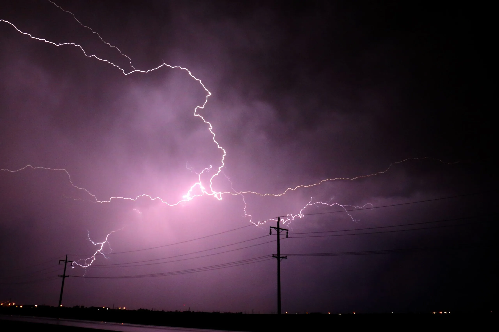
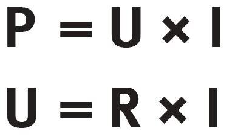
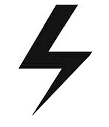
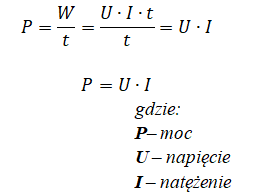

Moc prądu
Autorzy: Yevhenii Zhelieznov, Oleksandr Zhelieznov, Arsenii Siversky
Klasa: 2c
Moc prądu jest podstawowym parametrem elektrycznym, który określa ilość energii przekazywanej przez obwód w jednostce czasu.

Definicja mocy
Moc elektryczna (P) to ilość energii zużytej lub dostarczonej przez obwód w jednostce czasu.
Oblicza się ją ze wzoru: P = U × I, gdzie:
- P – moc w watach (W)
- U – napięcie w woltach (V)
- I – natężenie prądu w amperach (A)
Moc informuje nas, ile energii jest zużywane przez urządzenie elektryczne w danym czasie. Na przykład żarówka 60W zużywa 60 watów energii elektrycznej.
Moc czynna
Moc czynna (P) to ta część mocy, która wykonuje rzeczywistą pracę w obwodzie elektrycznym.
Jest to energia przekształcana np. w ciepło, światło lub ruch mechaniczny.
Moc czynna jest mierzona w watach (W). Przykłady urządzeń zużywających moc czynną:
- Żarówki i lampy LED
- Silniki elektryczne
- Grzejniki elektryczne
Pomiar mocy czynnej jest istotny, ponieważ pokazuje faktyczne zużycie energii.
Moc bierna
Moc bierna (Q) nie wykonuje pracy użytecznej, ale jest niezbędna do wytworzenia pola magnetycznego w
urządzeniach indukcyjnych, takich jak transformatory, silniki czy cewki.
Jednostką mocy biernej jest var (volt-amper-reaktywny).

Obecność mocy biernej powoduje straty w sieci i wymaga kompensacji, np. przez kondensatory.
Moc pozorna
Moc pozorna (S) łączy moc czynną i bierną i określa całkowite obciążenie w sieci. Oblicza się ją ze wzoru:
S = √(P² + Q²)
Jednostką mocy pozornej jest voltamper (VA).
Moc pozorna jest używana przy projektowaniu instalacji, ponieważ przewody i zabezpieczenia muszą wytrzymać
pełne obciążenie (łącznie z mocą bierną).
Wzory podstawowe



Do obliczeń mocy w obwodach prądu stałego stosuje się podstawowe wzory:
- P = U × I – obliczenie mocy
- I = P / U – obliczenie natężenia prądu
- U = P / I – obliczenie napięcia
W obwodach prądu zmiennego dodatkowo uwzględnia się współczynnik mocy cosφ, który zmniejsza moc czynną w obecności mocy biernej.
Przykłady obliczeń

Przykład 1: żarówka 12V, 2A → P = 12 × 2 = 24 W
Przykład 2: urządzenie 230V, moc 460 W → I = 460 / 230 = 2 A
Przykład 3: silnik indukcyjny 1000 W, moc bierna 200 var → moc pozorna: S = √(1000² + 200²) ≈ 1020 VA
Podsumowanie
Moc prądu jest kluczowa przy projektowaniu instalacji elektrycznych.
Dzięki znajomości mocy czynnej, biernej i pozornej można:
- Dobierać odpowiednie przewody i bezpieczniki
- Zmniejszać straty energii
- Unikać przeciążenia urządzeń
- Efektywnie planować instalacje przemysłowe i domowe
Znajomość mocy jest podstawą bezpiecznego i ekonomicznego użytkowania energii elektrycznej.
Slajd nr 1